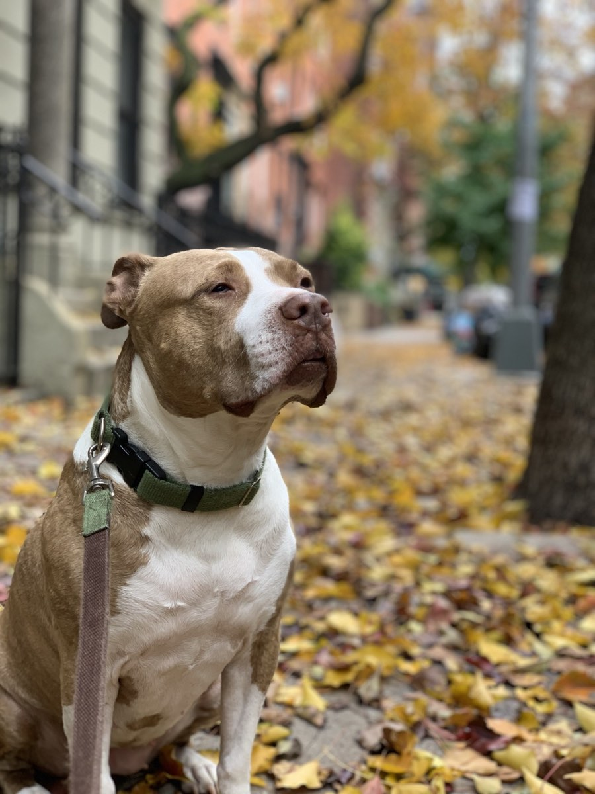

My name is Kevin Clarke, and this started earlier than most origin stories do. One of the first books I ever checked out of the library was about dog training. I was a kid with dogs at home, and I wanted to know what was actually going on with them.
Where it started

So I read it, then read it again, and the thing that stuck wasn't the training so much as the idea that another animal's behavior could be understood if you paid close enough attention. That never really went away.
For over a decade I ran my own dog care and training work in New York City. Manhattan, every kind of weather, every kind of dog. Labs, pit bulls, fearful rescues, anxious seniors, puppies who'd never seen a leash. Hundreds of dogs. Thousands of hours. No franchise behind me and nobody handing me a script, which meant when something didn't work I had to figure out why myself.
That's also where I learned you can't separate a dog's behavior from the rest of their life. Their environment, their history, their routine, who they live with. It all shows up in how they move through the world.
When I moved to Portland I brought all of it with me and built what I'd always wanted. A training practice that treats every dog as the individual they are. That's Dog Vibes.
How I think about training
I'm not a punish-the-bad-behavior trainer. I'm not a bribe-them-with-treats-and-hope-it-sticks trainer either. I'm a build-the-foundation trainer.
Where I'm firm is the ethics. Force-free, positive reinforcement, and I don't bend on that. Where I'm not firm is technique. Most trainers I've come across have one method and every dog gets it, which has never made sense to me. A reactive dog on a narrow sidewalk and a bored adolescent who won't recall in an open field are not the same problem.
So I've taken from wherever the useful thing came from. Marine mammal training, where there's no leash and no corrections available, so what you're offering has to be genuinely worth it to the animal. Working and sport dogs, where drive and motivation get taken seriously in a way pet training tends to skip past. Ethology, which is the study of how animals actually behave on their own terms.
Ethology is the one I lean on hardest, and it's the one you can't shortcut. It's a field built on observation. Watching what an animal really does, rather than what a method says it ought to. Ten thousand hours is the number people use for expertise, and a decade of full-time work with dogs put me well past it. None of it in a classroom with the variables controlled. Real dogs, reacting to things I didn't schedule, in a city that doesn't slow down for you. You start reading a dog earlier that way. You notice the thing that comes before the thing.
Dog training isn't a regulated profession. Anyone can call themselves a trainer, and there are certifications you can finish over a weekend online. Some are a reasonable place to start. None of them stand in for the hours.
What stays constant is the foundation. Classical conditioning and positive reinforcement, force-free. Not because it's fashionable, but because it holds up and it works. When a dog understands what you're asking and has a real reason to do it, the behavior sticks.
Sometimes the answer isn't behavioral at all. Pain, a thyroid problem, vision going. A dog who's unwell and telling you the only way they can. I'm a trainer and not a vet, but I've seen enough to notice when something doesn't add up, and to say so rather than train around it.
Before I teach anything, I learn your dog. Reactivity, leash pulling, anxiety, basic obedience, whatever you're working on, the real solution starts with understanding why it's happening. That's the holistic part. That's the Dog Vibes part.
"Training works best when it's designed around the specific dog in front of you, not the average dog."
Where things stand now
Dog Vibes isn't my full-time work anymore, and I've decided I like it that way. It's the thing I keep coming back to because I want to, which means I can be choosy about it.
I take a small number of dogs at a time and my schedule is limited, so I only say yes to work I can properly commit to.
When you work with Dog Vibes you get me. Not a junior trainer with a method sheet, and not someone counting how many clients fit in a week.
You'll walk away from our work together knowing why your dog does what they do, and what to do about it. Not just a trained dog, but an owner who understands their dog.
A little more about my background
Experience: 10+ years professional dog care and behavior work
Dogs worked with: Hundreds, across breeds, temperaments, and behavioral challenges
Methods: Classical conditioning, positive reinforcement (force-free only)
Location: Portland, OR, serving clients remotely nationwide
Philosophy: Holistic. Individualized. Owner-empowerment focused.
Limited sliding scale spots available for families who need it. Reach out to ask.